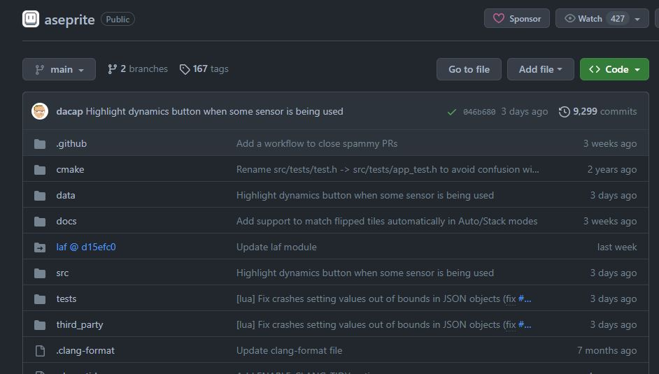

Clip Studio Paint
Clip Studio Paint is the main program I use to create everything that I do.Formerly known as Manga Studio in North America. Clip Studio Paint is a software application developed by a Japanese graphic software company, Celsys and was initially released 22 years ago in 2001. The application is split between two editions. The Pro version and the EX version. I use the EX version as I also create multi page projects. I also create animations well above 24 frames. Clip Studio Paint is available in Windows,Mac,and Linux
| Clip Studio Paint PRO | |
|---|---|
| Functions |
|
| One-time purchase (Win/Mac) | US $49.99 (tax included) |
| Monthly usage plan | From US $0.99/month (tax included) |
| Clip Studio Paint EX | |
|---|---|
| Functions |
|
| One-time purchase (Win/Mac) | US $219.99 (tax included) |
| Monthly usage plan | From US $2.49/month (tax included) |
Asesprite
Another Program I use is Asesprite. Asesprite is a program designed to primarily create animated sprites. It also can be used just for pixel art. The program consists of features to make it easier to animate pixel art.
- Create sprites with separate layers and frames.
- RGBA or indexed color modes.
- Save in GIF or image sequences(PNG).
- Animation timeline with freedom to manipulate frames and layers in different keyframes and frames.
- Exporting/Importing Sprite Sheets.
- A command line interface to automate conversion and sprite sheets generation.
- Updates for the whole v1.x series up to v1.9.
Features
The app itself goes for $19.99 on Steam and its website. However, it is also available for free as its source code is freely available to be downloaded from github for those who are willing to build the files themselves. The only thing you'll miss from not buying it is not being able to get automated updates. Asesprite is availabe in Windows, Mac, and Linux OS.
Adobe After Effects

Adobe After Effects is a program used for digital visual effects, motion, and composition.Adobe After Effects is a program I mainly use for Post Production.I use it to animate my illustrations(live2d) that are not fullblown frame by frame animations.I also use it to enhance the post-production look of my drawings